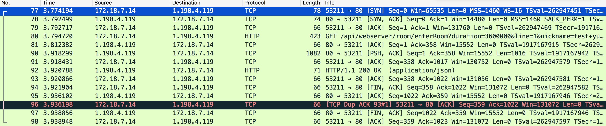

Review Network Error
重新审视“网络连接错误”
前言
最近在做项目的过程当中遇到了一件颇有启发性的事情，在此分享给大家。请注意这篇文章绝对不是干货，相反，非常的”湿”.
背景
早在11月初的时候，做了很久的某直播项目终于提测了，屁颠颠的提测到QA那。过了没多久，QA同学招唤我，”YYY, 这个进直播间总是卡在80%进不去啊。提示加载失败。”
“怎么可能，我写的代码怎么会有Bug, 肯定是你网不好吧”。
为了证明我的清白(怕被自己打脸)，于是从神策上拉了日志，日志显示”信令SDK server can not connect”。松了一口气，不是我的锅。
面对铁证如山，QA同学虽然很是怀疑，但是还是放过了我。作为一名有责任心的RD，为了进一步将问题明确(甩锅)，将信令连接失败的错误作为网络错误在弹窗上显示出来。
随着测试过程的不断深入，发现了越来越多的Bug（???），进不去直播间的问题还是时有发生。于是信令同学细化了相关的日志以便排查问题。
而我们在公司自测开发的过程当中，也出现了进直播间失败的情况。当时日志显示所有的ep节点都ping失败了。
进教室选点逻辑
这里先简单插入一下进直播间过程当中的选点逻辑。
服务端会返回9个（目前是9个）EP节点的IP列表(含端口)。之后信令SDK会对每个IP开启一个线程，每个线程里串行的连续对该IP进行5次ping请求。
每个ping请求实际上是访问了这个节点的一个HTTP服务。这个HTTP服务什么也没做，直接返回success给客户端。
大概是长这个样子：http://ip:port/ping?xxx=yyy.
目前端口都是8080。
最后哪个IP的线程先执行完，那就代表哪个IP对客户端而言最优，于是会把这个IP作为后续流程的服务器。
这里我们不去探究这个选点逻辑的优劣。感兴趣的同学可以自己设计一个选点策略。
问题
现在日志很清晰的告诉你，9个ep节点，每个ep节点都ping失败，访问不通。小明，你怎么看？
答案一
是不是当时网断了，网络情况很差。一开始我想当然的也是这么认为。
可是ep选点之前还要经过其他好多接口，其他接口访问都没事。那证明网络是好的，并没有问题。
答案二
那会不会是服务端挂了。
一共9台服务器，都挂的概率也太低了吧，而且当时老师端是能进去的，也是同样的网络与选点策略。
答案三
会不会是信令SDK存在什么bug，在某种情况下会导致网络请求发不出去。
嗯。你的怀疑很有道理，但是证据呢？
答案四
会不会是iOS系统有什么连接数限制，同一时间发起这么多请求，触到了系统的禁忌之地？
嗯。想想也是相当有道理。怎么验证？
答案五
由于ping服务是HTTP服务，且使用了一个非常规端口：8080。那有没有可能是端口被封呢？
在某些网络环境下的确有可能。不过多数情况下，在我们的公司网络下访问是没有问题的。
那总不会是当一些特定情况下会把8080端口封了，而大多数情况下又恢复了呢？可能性比较低，但也不能完全否定。
找证据
前面答案一和答案二经不起推敲，后面两个答案初步审视感觉有点靠谱，但怎么验证呢？
答案四提到的连接数限制，印象中之前看过一篇文章提到过移动设备上的网络连接数限制。
后来一顿疯狂搜索之后得出的结论是: 对同一Host下的网络请求会限制并发连接数，并且这个数与iOS版本及当时的网络情况(2G/3G/WIFI)有关系.
查了官方文档，虽然没有明确的这种结论，但是NSURLSessionConfiguration里的HTTPMaximumConnectionsPerHost还是可以大致推断刚才那个结论应该是正确的。
1 | Declaration |
可是细想之下，9个EP节点，每个的HOST都是不同的啊，并不符合这里提到的同一host的连接数限制。难道不同的host也会有一个最大连接数的潜规则吗？
案件到这里感觉得不到更多有价值的线索了。难道又要成为一桩悬案了吗？
再怎么如何在网上去搜索你想要的答案，不如自己动手来验证一下。
既然涉及网络，那就抓包吧。这里不详细介绍如何抓包，大家感兴趣可以看以下几篇文章：
P.S. 信令SDK用C++编写，采用curl去做网络请求，用charles抓不到，有知道内情的同学可以分享一下～
在疯狂进出教室几百次之后，终于让我很幸运的复现了一次进教室失败。于是用颤抖的双手点开了Wireshark，来见一见这位谜一样的女子揭下神秘面纱后的样子吧：
WTF??&#$&#&?喵了个咪？这些都是什么鬼？打码了吗？？
三次握手
同学们，请翻到教材“计算机网络”的第xx页，这是重点，要考的哦。
“啪叽”,一个板擦砸中了我骄傲的后脑勺。”YYY，快下课了你还睡！”。
好了，同学们，让我们来了解一下TCP连接的建立过程吧。
C –SYN–> S
S –SYN, ACK–> C
C –ACK–> S
- 主动发起连接的一方会发送一个SYN标记的包到目标IP
- 目标IP收到该SYN的包之后，会发送一个ACK的包回给主动连接方
- 主动连接方收到目标机的ACK包之后，会再发送一个ACK到目标IP
于是双方的连接就此建立。
通俗一点的表示：
- A对B说，我好稀饭你，你可以做我女票嘛
- B听见之后对A说，讨厌，其实我也稀饭你
- A听后大喜，对B说，好啊好啊，从今以后你就是我女票了
于是A和B之后就在一起了。
HTTP请求
我们知道HTTP请求实际上是建立在TCP连接之上的。在不考虑连接复用的前提下，实际上每次HTTP请求的初始阶段都要经历TCP的三次握手。下面这个图可以很清楚的看到HTTP请求建立连接阶段的三次握手，以及最后关闭连接时的四次挥手。

抽丝剥茧，我们在一大堆的TCP包里面，找到了返回ep节点列表的HTTP响应。将其中的ep节点列表提取出来，作为过滤条件，将所有ep节点相关的请求都过滤出来。
结果发现了这样一个人间悲剧:
真的向9个节点分别都请求建立连接，但是9个节点竟然都不给我回应，导致出现了TCP包的超时重传Retrainsmission。
(可以观察到，在iOS上，TCP包的超时重传头几次基本上是一秒一次。而在电脑上基本是按指数级别递增的).
随后一直超时重传最终触发了信令SDK里的超时逻辑，重新去请求进教室接口获取ep节点，并重新ping这些ep节点。不幸的是，这之后的尝试依然失败。
案发现场
经过上述的追查，总算能基本上将案发现场还原了，信令SDK获取到了ep节点列表，并正确的发起了9个请求去尝试连接这9个ep节点。但是这9个ep节点都没有回应。
这里引发TCP包的超时重传的直接原因就是: 客户端发起了SYN包，但是一直未能收到ACK包，因此客户端尝试重新发送SYN包.
同时我们也能观察到，在尝试和ep节点建立连接的过程当中，有其他请求的TCP连接是正常工作的，能正常的收发包。因此当下客户端的网络是好的，也并没有受到连接数的限制.
可能的结案
请求确实发出了，但是没连上。而客户端网络又没有问题。带着这强烈的好奇心，搜索了一下。结果发现还真有一些结论符合我们的现象。
服务端系统内核中开启了
tcp_tw_recycle，当多个客户端使用同一个外网IP，连接到服务端，60s内发来的connect请求中时间戳必须是递增的，否则较老时间戳的包会被视为老包丢弃。
tcp_tw_recycle
这个东东是做什么的呢？
长话短说，主动关闭TCP连接的一方，会在四次挥手之后进入TIME_WAIT状态。这个状态会等待2个MSL的时间，大约是几分钟，这个连接才会真正被关闭。这段时间内这个连接是不能被回收的。期间如果要建立新连接，只能启用一个新的端口。如果短时间内有大量的连接，很有可能导致端口被耗尽。不过值得注意的是，TIME_WAIT状态只会出现在主动关闭TCP连接的一方。
为什么是2个MSL时间呢，MSL是指段最大生存时间，或者说报文最大生存时间，他是任何报文在网络上能存在的最长时间，超过这个时间报文就会被丢弃。在主动关闭连接的一方最后一次挥手发出ACK后，对方如果没有收到最后这次ACK，对方还会重发一次第三次挥手的FIN包，这时候主动关闭连接的一方还可以重发一次第四次挥手的ACK包。等待2个MSL的时间可以保证对方如果有包迟到，本方也不可能再接到这个迟到的包了，这时候复用连接的端口就不会有冲突了。
系统内核中的tcp_tw_recycle就是用来加快这种连接的回收。开启的情况下允许协议在2个RTT的时间内就可以进行连接回收。这样的好处是加快连接的复用。
同时内核中是这样处理SYN包的：
1 |
|
可以看到当满足下面所有的条件时，这个SYN包将会被丢弃，然后释放相关内存。
- tcp的option有 time stamp字段.
- tcp_tw_recycle有设置。
- 在路由表中是否存在完全相同的流，如果存在则直接返回.
- 并且数据包的源地址和新请求的源地址相同.
- 根据路由表以及源地址能够查找到保存的peer.
- 当前时间(接收到SYN)比最后一次的时间(time stamp)小于60秒.
- 已经存在peer的最近一次时间戳要大于当前请求进来的时间戳.
时间戳是怎么得来的呢？回顾一下我们上面的抓包截图，可以看到在SYN包的后面会有一项TSVal，这个就是代码里用到的时间戳。也可以观察到这个时间戳并不是一个unix时间戳，实际上是CPU的启动时间。因此这个时间戳只能保证这一次连接过程中包的时间顺序，而不能保证多个连接之间的时间顺序。
我们再来回顾一下我们遇到的网络问题。看是否能对上这个结论
- 我们使用公司的办公网络，出口IP很大概率是同一个。
- 有一次复现的现象是，郭老师一登老师端，之后我再使用iPad进入教室就会一直ping失败。无论是切课还是重新进教室。直到稍微过一会儿再进就OK。
简单分析一下：
我们使用了同一个IP连接到服务端，老师端先和服务端连接上了，之后学生紧接着也尝试和服务端建立连接，这时候服务端发现来一个比之前的时间戳更老的包，于是认为这是一个老包，将之丢弃。
客户端一直没有收到ACK，于是超时重传，更进一步的，触发了信令SDK的超时逻辑。
感觉已经很接近事情的真相了，当然目前服务端的同学还在尝试进一步验证这个结论。
心得
无论最终这次进教室失败表面看来的网络错误，背后的真因究竟如何。我自己还是从这次事件中感受良多。
网络问题我们总是遇到，但大多数情况下可能我们只是简单的认为网不好，之后就不了了之。其实很有可能背后隐藏了很多东西，如果细细发掘一下，会有不少的收获。
不光网络问题，当有一个看似非常简单浅显的问题抛出来的时候，我们还是应该多想想，有没有可能并没有我们想的那么简单。